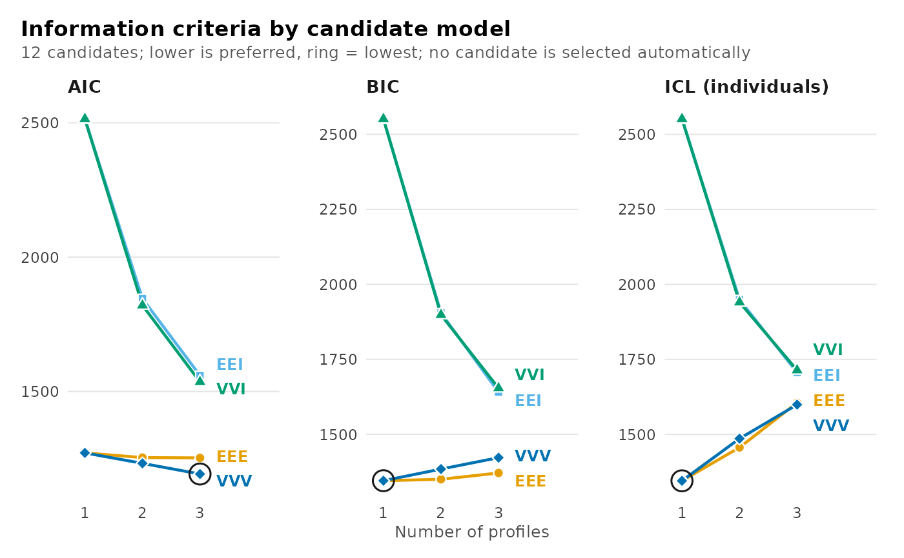

Fits single-level latent profile models with each number of profiles in
n_profiles under each covariance structure in model, and returns them
in one table for comparison by information criteria, entropy and the
diagnostics of each fit. It is enumerate_classes() with id = NULL, and
it returns the same object.
Arguments
- data
A data frame with one row per observation.
- vars
Names of the indicator columns.
- n_profiles
Positive whole numbers of profiles to compare.
- model
The covariance structures:
"basic", the default, for the four that combine equal or varying variances with covariances absent or present (EEI,VVI,EEE,VVV);"all"for all 14; or their three-letter codes. Seeenumerate_classes().- ...
Further arguments for
multilpa(), such asmissing,n_starts,seedandcategorical, exceptidandn_group_classes.
Value
An object of class multilpa_enumeration, as enumerate_classes()
returns: as.data.frame() gives one row per candidate, summary() the
candidate each criterion prefers, plot() the criteria against the
number of profiles, and candidate_fit() one fitted candidate.
Details
For observations nested in groups, use enumerate_classes() with the
grouping column as id, which also crosses the number of group classes.
Conditions
latents_bad_argument when id or n_group_classes is passed, or when
model names an unknown structure.
References
Celeux, G., & Govaert, G. (1995). Gaussian parsimonious clustering models. Pattern Recognition, 28(5), 781–793.
See also
lpa() to fit one model; enumerate_lca() for categorical
indicators; bootstrap_lrt() to test one number of profiles against
another.
Examples
models <- enumerate_lpa(srl, c("cognitive_strategies", "intrinsic_value",
"self_efficacy", "self_regulation",
"test_anxiety"),
n_profiles = 1:3, n_starts = 2, seed = 1)
summary(models)
#> Class enumeration: 12 candidates, 12 converged, 0 failed to fit
#> 2 distinct candidate(s) are minimal under some criterion.
#> No candidate is selected automatically. Choose one convention and keep it.
#> The candidates table shows 10 of its 26 columns; get_results(x, what = "candidates") returns all of them.
#>
#> -- candidates ------------------------------------------------------
#> n_profiles model log_likelihood n_parameters aic bic icl_individual
#> 1 EEI -1247.3 10 2515 2552 2552
#> 2 EEI -906.7 16 1845 1905 1949
#> 3 EEI -757.7 22 1559 1641 1707
#> 1 VVI -1247.3 10 2515 2552 2552
#> 2 VVI -889.3 21 1821 1898 1940
#> 3 VVI -735.7 32 1535 1654 1714
#> 1 EEE -615.7 20 1271 1345 1345
#> 2 EEE -600.9 26 1254 1350 1457
#> 3 EEE -594.4 32 1253 1371 1606
#> 1 VVV -615.7 20 1271 1345 1345
#> profile_entropy converged boundary
#> NA TRUE FALSE
#> 0.8939 TRUE FALSE
#> 0.9003 TRUE FALSE
#> NA TRUE FALSE
#> 0.8991 TRUE FALSE
#> 0.9089 TRUE FALSE
#> NA TRUE FALSE
#> 0.7440 TRUE FALSE
#> 0.6442 TRUE FALSE
#> NA TRUE FALSE
#> ... 2 more rows. get_results(x, what = "candidates")
#>
#> -- criteria --------------------------------------------------------
#> criterion convention n_profiles n_group_classes model value
#> aic <NA> 3 1 VVV 1193
#> kic <NA> 3 1 VVV 1258
#> bic groups 1 1 EEE 1345
#> bic individuals 1 1 EEE 1345
#> sabic groups 3 1 VVV 1226
#> sabic individuals 3 1 VVV 1226
#> caic groups 1 1 EEE 1365
#> caic individuals 1 1 EEE 1365
#> awe groups 1 1 EEE 1520
#> awe individuals 1 1 EEE 1520
#> ... 4 more rows. get_results(x, what = "criteria")
#>
#> 2 tables above, truncated to fit. get_results(x, what = ) returns any
#> of them whole, and get_results(x, what = "all") returns every one.
plot(models)
